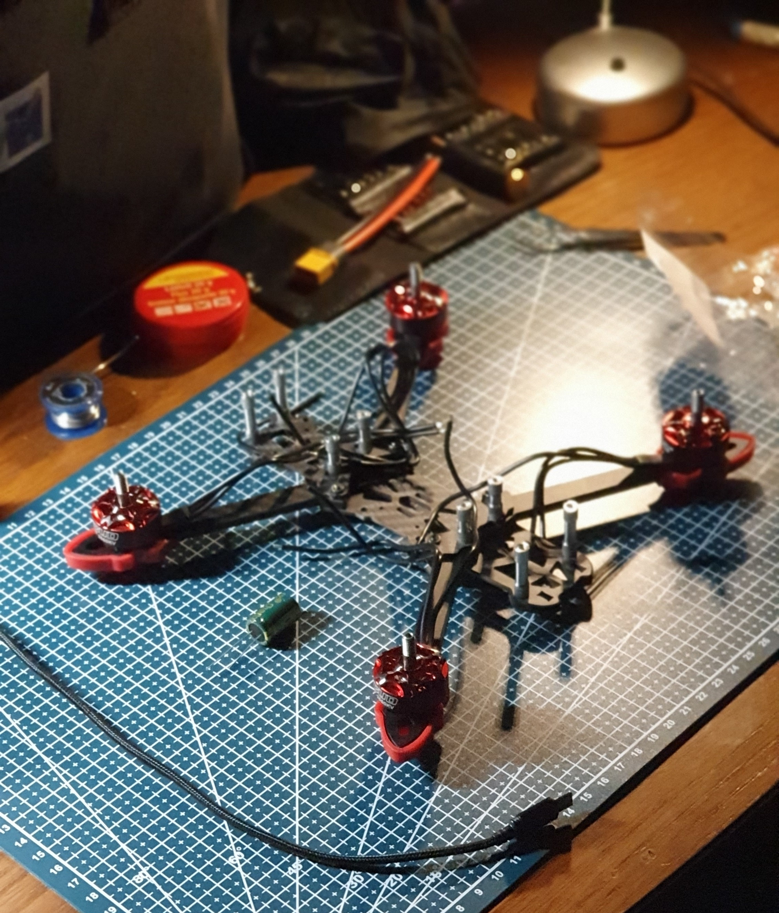
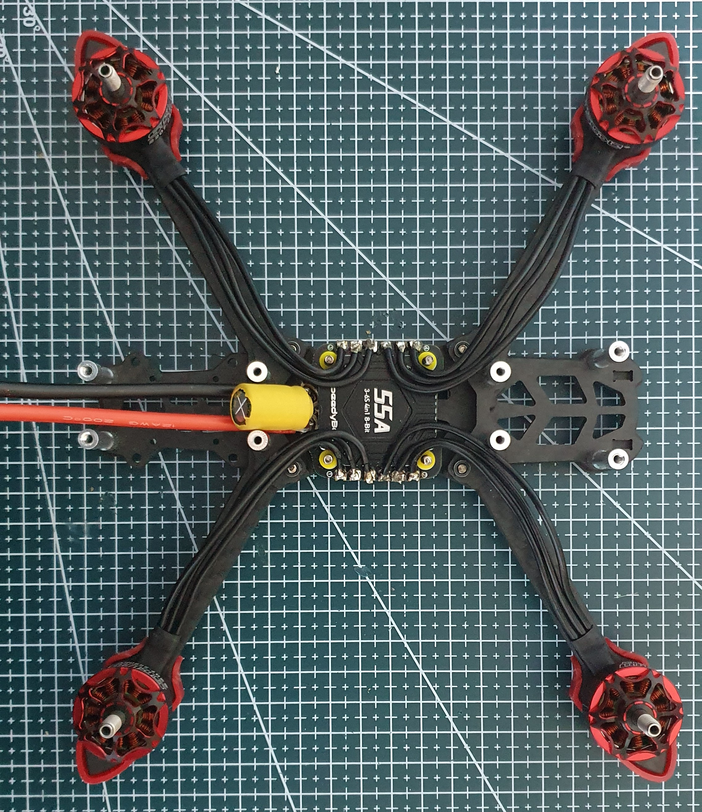
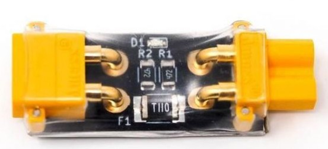
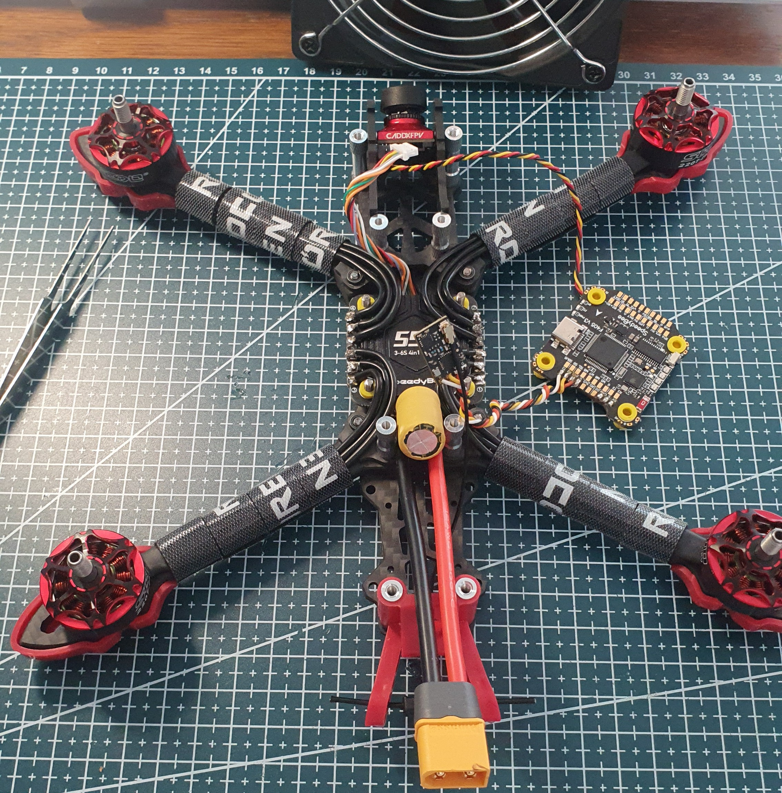
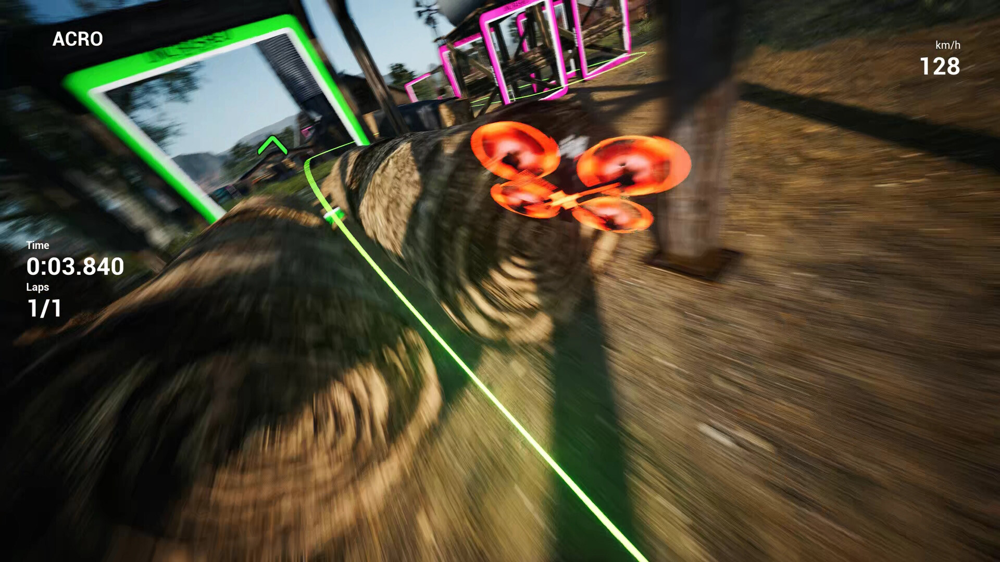
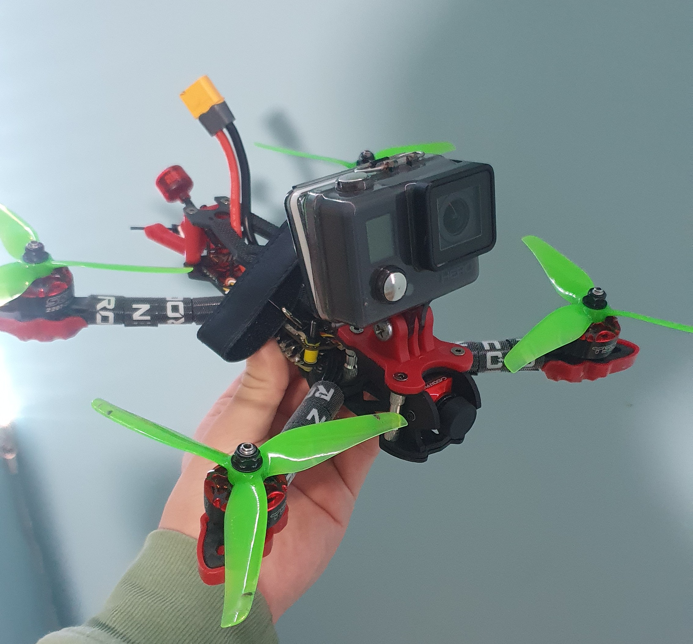
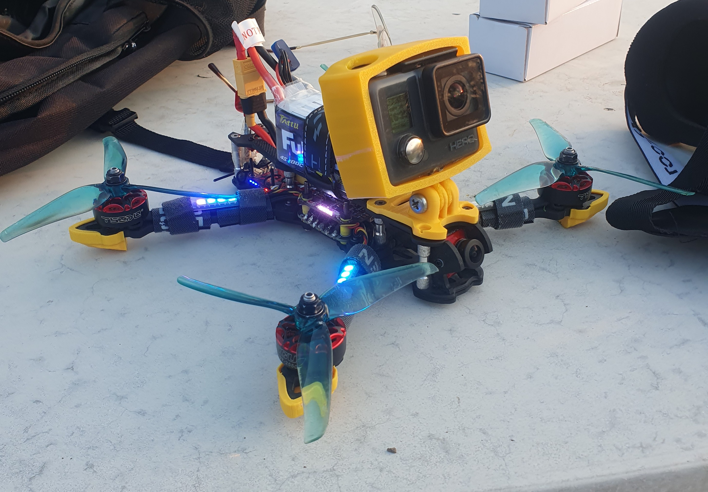

Fabrication drone FPV
Conception, assemblage matériel et configuration logicielle de A à Z.
Introduction
Le drone FPV (First Person View) est un aéronef piloté en immersion totale grâce à une caméra embarquée qui transmet le flux vidéo en temps réel vers le masque du pilote. Attiré depuis longtemps par le monde de l'aéromodélisme au travers de nombreuses vidéos, j'ai décidé de franchir le pas : concevoir, assembler et piloter ma propre machine.


Objectif et cahier des charges
L'objectif était de concevoir un drone polyvalent, à mi-chemin entre le freestyle et la course, en sélectionnant des composants fiables tout en maîtrisant le budget global. Cette phase a exigé un important travail de recherche pour comprendre l'architecture matérielle, identifier les marques reconnues du marché et s'assurer de la parfaite compatibilité des éléments entre eux.
Setup embarqué (5 pouces)
- Châssis GEPRC Mark 4
- Carte mère (FC & ESC) SpeedyBee F405 V3 + ESC 50A 4-en-1
- Motorisation YSIDO 2250KV
- Transmission Vidéo Caméra Caddx Ratel 2 + VTX Rush Tank Ultimate (5.8 GHz, 800 mW)
- Liaison Radio Récepteur ExpressLRS (2.4 GHz)
- Alimentation Batterie LiPo 4S (14,8 V / pleine charge 16,8 V)
Équipements au sol
- Radiocommande RadioMaster Pocket (EdgeTX, module ELRS intégré)
- Masque FPV Eachine VR007 Pro
- Alimentation Chargeur IMAX B6AC
- Prototypage 3D Bambu Lab A1 (Impression de pièces en TPU 95A : support XT60, bumpers, antennes)
Assemblage matériel
Dès la réception des composants, j'ai procédé au montage mécanique du châssis puis à l'intégration des moteurs. L'étape suivante, plus technique, a consisté à réaliser les soudures à l'étain sur l'ESC (Electronic Speed Controller) et la FC (Flight Controller), qui forment le cœur du système.


Une fois les moteurs, le condensateur de filtrage et le câble d'alimentation soudés, un premier test électrique s'impose. L'utilisation d'un "smoke-stopper" (limiteur de courant) est indispensable pour détecter un éventuel court-circuit avant la mise sous tension définitive. C'est une étape délicate : un court-circuit avéré obligerait à refaire tout le câblage, au risque d'avoir déjà endommagé l'électronique.

Soudure et intégration
Le processus de câblage et de soudure s'est révélé particulièrement chronophage. La miniaturisation des composants implique de travailler sur des "pads" de contact minuscules. Ne disposant pas d'un fer à souder de forte puissance ni d'une panne parfaitement adaptée à la microélectronique, cette étape a exigé beaucoup de précision et de patience. Mais, étape par étape, la machine a pris forme.


Configuration logicielle (Betaflight)
L'assemblage physique terminé, le drone n'est pas encore apte au vol. Il est impératif de configurer la machine via le logiciel Betaflight. Cet outil paramètre entièrement le comportement en vol (réactivité, stabilité, filtres PID). Il permet également de configurer l'OSD (l'affichage des données dans le masque), le comportement de sécurité en cas de perte de signal (failsafe) et l'appairage radio. En somme, c'est l'interface qui traduit l'assemblage matériel en un système de vol cohérent et sécurisé.
Phase d'apprentissage : le simulateur
Le véritable premier vol ne se fait pas sur le terrain, mais sur écran. Avant même d'y brancher une batterie pour tenter des acrobaties, un passage par le simulateur s'impose. La physique du pilotage FPV est contre-intuitive au départ ; sans entraînement, le premier vol se solderait inévitablement par un crash. Après quelques heures d'assimilation des commandes virtuelles, j'étais enfin prêt pour le terrain.

Vol inaugural et réglages PID
Le vol inaugural reste un moment sous tension, avec l'appréhension constante d'une défaillance inattendue. Heureusement, tout s'est très bien déroulé et les résultats ont été à la hauteur de mes attentes. Ce premier essai m'a ensuite permis d'analyser le comportement de l'aéronef afin d'affiner le correcteur PID de la carte de vol, optimisant ainsi les performances et éliminant les saccades résiduelles.
Bilan du projet
Ce projet m'a énormément apporté sur le plan technique. J'ai pu consolider mes compétences pratiques (soudure de précision, câblage, lecture de schémas électriques) et ma capacité à diagnostiquer des problèmes inattendus de manière autonome. L'objectif initial est pleinement atteint : concevoir un système complexe et fonctionnel, tout en prouvant qu'avec de la méthode, de la détermination et de l'investissement personnel, les défis de l'ingénierie embarquée sont tout à fait accessibles.

.jpg)
